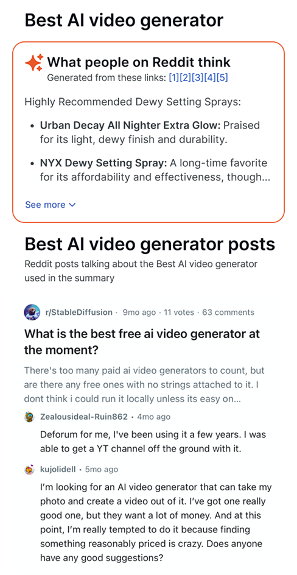

Phone screenshot pending —
export Figma
1481:802
to
assets/ui-answers-composition.png
Synthesized summary
The user’s answer in one place, generated from posts most relevant to the query
Source Posts
Original post with title, body preview, and vote count — the primary source for the synthesis above
Threaded Comments
Two comments per post — enough to show conversation context without overwhelming the card